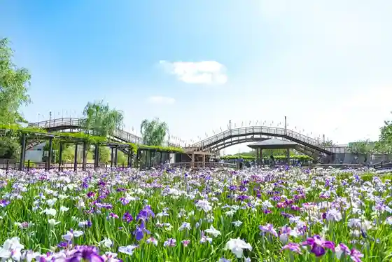
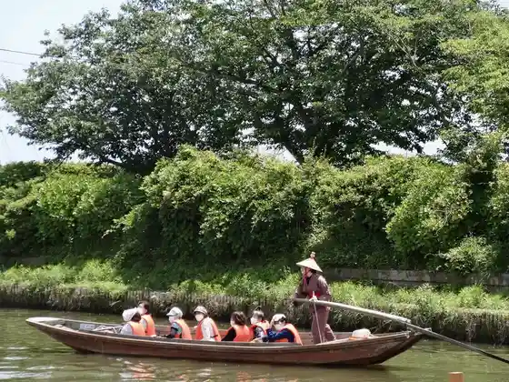
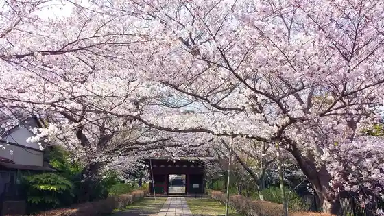

Japan / Ibaraki / Itako
Itako, Ibaraki
Itako · Ibaraki
Itako
Highlighted on the Ibaraki map.
Sights
Suigo Itako Ayame Sono
Itako, Ibaraki · 0299-63-1111 · Official / source link

Roadside Station Itako
Itako, Ibaraki · 0299-67-1161 · Official / source link
Itako (Ro Funasobi Ran)
Itako, Ibaraki · 0299-94-2800 · Official / source link

Hakucho Village (Kitaura Lakeside)
Itako, Ibaraki · 0299-63-1111 · Official / source link
Nagakatsu Tera
Itako, Ibaraki · 0299-63-1111 · Official / source link

Tsugaru Kashi Ato Plaza
Itako, Ibaraki · 0299-94-2800 · Official / source link
Suigo Kenmin Forest
Itako, Ibaraki · 0299-64-6420 · Official / source link
Gongen Yama Park
Itako, Ibaraki · Official / source link
Nihonmatsu Tera
Itako, Ibaraki · 0299-64-2263 · Official / source link
Aiyu Shuzo (Kabu)
Itako, Ibaraki · 0299-62-2234 · Official / source link
Suigo Kyuka Isoyama Tei
Itako, Ibaraki · 0299-94-2800 · Official / source link
Tsuka Hon Soba Mise
Itako, Ibaraki · 0299-62-3212 · Official / source link
Itako Kantorii Kurabu
Itako, Ibaraki · 0299-67-5051 · Official / source link